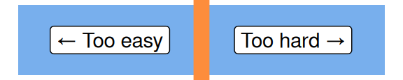

An introduction to AI (…and why you might avoid that term)
Previous attendees have said…
- 18 previous attendees have left feedback
- 100% would recommend this session to a colleague
- 100% said that this session was pitched correctly

- very interesting
- Really helpful overview which prompted lots of discussion in the chat.
- thought- stimulating and informative session
- all materials
- slides
html / pdf
Welcome
- this session is üå∂: for beginners
- it aims to do two things:
- to suggest that the term AI is troublesome
- to introduce some of the different technologies that get lumped together as AI
A philosophical question
- do submarines swim?
Hype
- There’s a lot of hype about AI at the moment (see this graph)
- Underneath the hype, there’s a lot of genuinely exciting stuff going on too
- That exciting stuff is likely to have some impact on health and care work
Motive
- The intelligence part of AI is as misleading as a swimming submarine
- There are lots of different technologies that currently fall under the AI umbrella
- Points 1. and 2. matter in a practical way because of the hype

What does AI mean to you?


Is AI…
- Over-hyped?
- Somewhere in between?
- Neglected?
- Other / don’t know
About this talk
Two linked problems:
- a worry about intelligence: based on the swimming submarine
- a worry about diversity: AI is several things, not just one thing
The Chinese room
Searle (1980)
“Suppose that I’m locked in a room and given a large batch of Chinese writing. Suppose furthermore (as is indeed the case) that I know no Chinese, either written or spoken, and that I’m not even confident that I could recognize Chinese writing”
However, he is supplied with a set of intelligible rules for manipulating these Chinese symbols
“火” is the opposite of “水”
“六” is more than “四”
Question
Does this poor bloke locked in a room understand the Chinese symbols?
Now suppose that we start asking him questions (in English):
Is “六” more than “四”?
If so, respond with “是”. Otherwise respond “不”
Question
- Is understanding the same thing as being able to produce output in response to input?
- Searle (1980) - this is the difference between strong and weak AI
Back to nice safe words
- we usually don’t worry too much about what words like intelligence, understanding, etc really mean
- for most purposes, understanding something, and doing that thing, pretty well overlap
- AI, unfortunately, is an exception
- big difference between producing output and understanding here
Why does this matter?
- Because the current conversation around AI does violence to our usual understanding of basic terms (like intelligence)
- We need to do a bit of re-interpreting…
- …particularly because AI can do the input-output part really well
- (side effect) The Chinese Room is an excellent way of understanding what’s going on inside some of the current tech
The tech
- AI = big umbrella term
- More specific terms:
- Algorithms = rule-based ways of producing sensible output
- Expert systems = more sophisticated expertise-based production of output
- Machine learning = umbrella term for non-expertise-based production of output
- Large Language Models = a massively-succesful sub-species of machine learning
So what’s an algorithm?

- Algorithm = rule (roughly)
- if something happens, do something
- made from expert input and evidence
An example algorithm

Related expertise-based tools
“See also…” references in indexes, library catalogues, wikipedia
 . . .
. . .
- Brilliant 1996 Master’s dissertation looking at the state of “see also…” referencing in Ohio’s public libraries
How about something more complicated?

- one problem with algorithms: how to handle conflicting information?
- An expert system - MYCIN (Shortliffe and Buchanan 1975)
- designed to identify bacterial infections and suitable Rx
- 600 rules, supplied by experts
- asks users a series of clinical questions
- combines the answers using a (fairly simple) inference system
- able to manage some conflicting information - unlike simpler algorithms
Machine learning
- A next step: can we provide learning rules to a system, and let it figure out the details for itself?

This is supervised learning
- supervision = labelled observations used for training and testing
- Lots of health examples with promising results:
- diabetic retinopathy (Mookiah et al. 2013)
- ECG (Aziz, Ahmed, and Alouini 2021)
- fractures, melanoma, …
A dataset downside

{kind=link}
Producing labelled datasets is hard:
- generally must be very large
- generally requires expert classification
- must be done with great accuracy
- scale bar problem (Winkler et al. 2021)
- so dataset labelling is wildly expensive and thankless
- Is there a way of doing something similar without spending trillions classifying everything in the world by hand?
Unsupervised learning

Unsupervised learning

Unsupervised learning

Unsupervised learning
- No-one is writing a list of possible searches starting with “Large…”
- Nor are they classifying searches into likely/unlikely, then training a model
- Instead, the model is looking at data (searches, language, location, trends) and calculating probabilities
- The terminology gets confusing again at this point:
- some describe this as deep learning
- better to call this a language model
Large language models
What if we were more ambitious with the scope of our language model?

- Find masses of language data
- chatGPT uses basically the whole web before September 2021
- Build a model capable of finding patterns in that data
- Attention model used in chatGPT (Vaswani et al. 2017)
- Allow the model to calculate probabilities based on those patterns
- lots of work going on at present allowing models to improve in response to feedback etc
Large language models
- superb at generating appropriate text, code, images, music…
- but production vs understanding
- e.g. hallucinations, phantom functions…
- training is extremely computationally expensive
- questions about inequality and regulatory moating
- no-one but FAANG-sized companies can afford to do this
- training is also surprisingly manual
- questions about inequality and regulatory moating
Ethics
- your web content, my model, my paycheque
- where’s the consent here?
- big serious worries about bias in some kinds of output
- rights violations via AI
- no settled questions around responsibility
- UK GDPR etc assume data is identifiable. That’s not true in LLMs.
Punchline
- On balance, while there’s hype here, there’s also lots of substance and interest
- LLMs have become much better at producing plausible output, across a greatly expanded area
- A strength: fantastic ways for those with expertise to work faster
- A danger: LLMs are great at producing truth-like output. Good enough so that some will be tempted to use them to extend their apparent expertise…
- But big serious legal and ethical trouble ahead - we’re not good at dealing with distributed responsibility
Thumbs-up for specificity
- many of the touted benefits are technology-specific
- e.g. if we want to understand why decisions are getting made in a particular way, an expert system is better than a LLM
- we should probably start asking “what do you mean by AI” whenever we’re trying to make decisions about it
Conclusion
- The intelligence part of AI is as misleading as a swimming submarine
- There are lots of different technologies that currently fall under the AI umbrella
- points 1. and 2. really matter because of the hype
Why the hype matters
- hype leads to perverse incentives and malfescience: call any rubbish AI, and get paid for it
- that means that both what we mean by AI, and what tech gets included, is extra-important at present - there’s an industry out there that’s profiting from blurring the boundaries